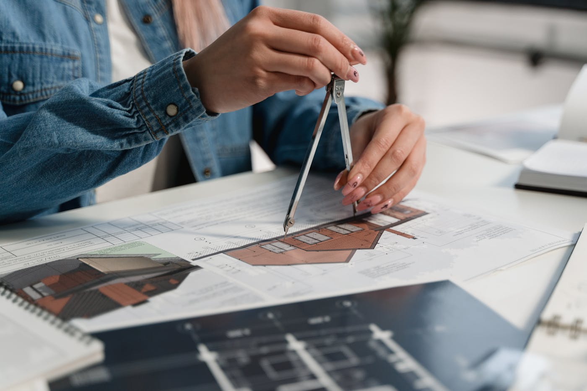
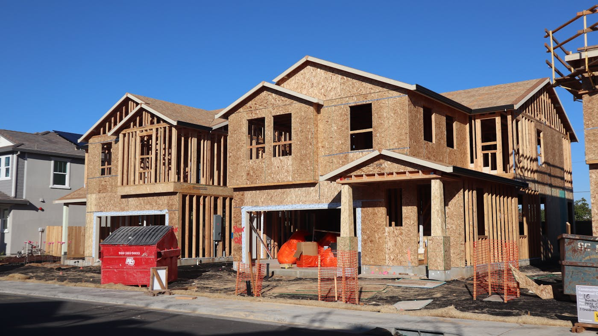

Quick answer: Office renovation builders in Sydney charge $800–$2,500 per m² in 2026, depending on scope and specification level. Most internal fitout works within an existing commercial tenancy qualify for a Complying Development Certificate (CDC) rather than a full council DA — meaning private certifier approval in 10–20 business days. For a 200–300 m² mid-spec renovation, budget $200,000–$450,000 for construction, plus $15,000–$40,000 for design documentation and certification. Total elapsed time from brief to practical completion on a standard project: 16–24 weeks.
“Workspace design” is what the industry started calling office renovation around 2015 — the same way overnight oats became bircher muesli on menus that charge $24 for them. The product is the same. Someone is still knocking out partitions and arguing about whether the carpet tiles should go in herringbone.
[Right. Straight face now.] Here is what you actually need before briefing anyone: what office renovations cost in Sydney in 2026, which approval pathway applies to your tenancy, what to look for in a builder, and the compliance item that reliably blows budgets without warning.
- What office renovation actually covers
- What Sydney office renovation builders charge
- Approvals: exempt, CDC, or DA
- BCA compliance in commercial tenancies
- How to choose the right builder
- Minimising business disruption
- What the timeline actually looks like
- Design-and-construct vs separate consultants
- When not to hire an office renovation builder
- Six questions to ask before you sign
- FAQ
What Office Renovation Actually Covers
“Office renovation” and “office fitout” are used interchangeably in everyday conversation, but builders and certifiers distinguish them. A fitout generally describes the initial setup of a new tenancy — base building connections, partitioning, flooring, lighting, and joinery for a previously unoccupied or stripped space. A renovation works on an existing fitout: removing what is there, reconfiguring the layout, upgrading services, and often bringing the space up to current National Construction Code (NCC) requirements.
The scope of a typical Sydney office renovation:
- Demolition of existing partitions, suspended ceilings, and floor coverings
- Electrical and data upgrades — LED lighting, new circuiting, structured cabling
- Air conditioning replacement or system reconfiguration
- New partitioning — glass, plasterboard, or framed steel systems
- Flooring — carpet tiles, polished concrete, or luxury vinyl plank
- Joinery — kitchen or breakout fitout, storage walls, reception counter
- Bathroom and amenities upgrades
- Fire and life safety compliance works
Mechanical and electrical trades — HVAC, electrical, fire systems — typically account for 35–45% of total construction cost on a commercial renovation. This is the item most cost estimates understate at the briefing stage.
What Sydney Office Renovation Builders Charge
The figures below are construction costs only. Design fees, private certifier fees, and loose furniture sit outside these ranges.
| Scope | Cost per m² (2026) |
|---|---|
| Cosmetic refresh — paint, carpet, lighting | $150–$400 |
| Mid-range renovation — partitions, joinery, MEP upgrades | $800–$1,400 |
| Full strip-back refurbishment to base building | $1,400–$2,500+ |
For a 300 m² Sydney tenancy at mid-range specification, construction costs run $240,000–$420,000. Add to that:
- Building designer or architect fees: $15,000–$30,000
- Private certifier (CDC): $3,000–$8,000
- Structural engineer, if required: $5,000–$12,000
- Asbestos identification and removal (older buildings): $8,000–$40,000
A full strip-back refurbishment of an older Sydney office tenancy — asbestos removal and full BCA compliance included — can reach $600,000–$900,000 for 300 m². This is not a complaint. It is arithmetic.

Photo via Pexels
Approvals: Exempt, CDC, or DA
NSW planning legislation creates three tiers of approval for office renovation work, and getting the wrong read on this adds months to the project.
Exempt development: Minor cosmetic work — painting, carpet replacement, replacing non-load-bearing fixtures — generally qualifies as exempt development under the State Environmental Planning Policy (Exempt and Complying Development Codes) 2008. No approval or certifier required.
Complying Development Certificate (CDC): Most internal renovations within an existing Class 5 (office) tenancy qualify for CDC approval through a private certifier, provided the use classification does not change and the works comply with the NCC. Approval typically takes 10–20 business days. This is the fastest and most common pathway for Sydney office renovations. The NSW Planning Portal outlines what qualifies.
Development Application (DA): Required when the tenancy use changes — for example, from general office to medical centre — or when the building is heritage-listed, or when works affect the building’s external structure or envelope in ways that exceed CDC criteria. Sydney CBD and inner-city LGAs process commercial DAs in 6–16 weeks for standard applications.
Before committing to a scope or a timeline, have a building certifier assess which pathway applies to your specific tenancy and building. A misread here costs more than the certifier fee.
BCA Compliance in Commercial Tenancies — The Part Most Guides Skip
This section is the one most renovation guides skip. We are not most guides.
When a Sydney office renovation crosses certain thresholds, the entire tenancy may be required to be brought up to the current NCC — not just the areas being touched. This is the compliance trigger that routinely adds cost without warning to projects that were quoted without it.
Trigger conditions include:
- Renovation cost exceeding a set proportion of the building’s assessed value under the consent
- Changes to access paths, egress routes, or fire compartmentation
- Changes to sprinkler coverage or fire detection systems
- Converting a Class 5 tenancy to a different use classification
In practice, this means an older Sydney office building — many of which were constructed to 1970s or 1980s codes — may require, as part of a renovation approval:
- Upgraded fire doors and self-closing hardware
- Disability access compliance under Section D of the NCC and the Disability Discrimination Act 1992
- Hydraulic fixture upgrades in amenities
- Asbestos-containing material identification and removal in affected areas
These items are not optional and are not negotiable with council. A builder who quotes without factoring compliance upgrades for a building of that era is not being competitive — they are providing an incomplete scope.
Ask any Sydney office renovation builder directly: “Has your quote been scoped against the specific year of construction and the current NCC, including Section D access requirements?” If the answer is vague, the variation notices will not be.
Photo via Pexels
How to Choose the Right Sydney Office Renovation Builder
The criteria for a commercial renovation builder differ from residential. An office renovation runs in a live commercial environment, involves BCA compliance obligations specific to the building classification, requires coordination with building management and other tenants, and often has a hard deadline tied to a lease commencement or expiry.
What to verify before you appoint:
Contractor licence: NSW Fair Trading requires a contractor licence for commercial building work exceeding $5,000. Check the licence — and the current Qualified Supervisor Certificate (QS) alongside it — on the NSW Fair Trading register. The QS is the person with the technical qualifications who can legally supervise the work.
Commercial project portfolio: A builder whose portfolio consists mainly of residential kitchens and bathrooms does not understand the coordination demands, compliance obligations, or business continuity requirements of a commercial tenancy project. Ask for recent commercial references — specifically office and fitout work in Sydney — and contact them. A builder who won’t provide references is, in a way, also providing a reference.
Insurance: Public liability at $20M minimum, workers’ compensation, and contract works (project) insurance are standard. Ask for current certificates before signing anything.
Experience in occupied buildings: Office renovations frequently proceed in stages while part of the tenancy remains operational. Managing construction access, fire system isolations, acoustic separation, and building management approvals in a live environment requires specific experience. Ask for examples of phased delivery — not a general affirmation that they can do it.
For guidance on evaluating construction credentials more broadly, our guide to how to choose a builder in Sydney covers the checks that apply across both residential and commercial work.
Minimising Business Disruption During Construction
Most commercial tenancies cannot close entirely for 12 weeks while a builder works. The approaches that reliably reduce operational impact:
Phased construction: Divide the floor plate into zones. Complete zone A while zone B remains operational. Move staff between zones as works progress. This extends the construction programme by roughly 20–30% compared to working on a clear floor, but avoids a total shutdown that few businesses can absorb.
After-hours and weekend works: For works that cannot be phased — base building service connections, fire system isolations, major demolition — schedule them outside business hours. The premium for after-hours trades is real, typically 15–25% above standard rates. The cost of the alternative is usually higher.
Base building and strata notifications: HVAC and fire system isolations require written notice to building management and, in some cases, to Fire & Rescue NSW. Experienced commercial builders handle this coordination as part of their standard programme. Confirming this is included in the contract scope — not a potential variation — saves friction mid-project.
Acoustic hoarding: Temporary acoustic partitions and construction hoarding contain noise and dust from occupied zones. Not all builders include this in their base scope. Ask specifically.
Our broader guide to choosing a builder for a renovation also covers scheduling and disruption management for residential projects, with principles that transfer to commercial work.

Photo via Pexels
What the Timeline Actually Looks Like
| Phase | Duration |
|---|---|
| Brief, design documentation, and engineering | 3–6 weeks |
| Private certifier / CDC assessment | 2–4 weeks |
| Builder tender and contract execution | 1–3 weeks |
| Construction on a clear floor | 6–12 weeks |
| Construction phased in an occupied tenancy | 8–16 weeks |
| Practical completion and defects period | 2–4 weeks |
For a typical 200–300 m² mid-spec Sydney office renovation, total elapsed time from first briefing to practical completion runs 16–24 weeks. Older buildings with compliance upgrade requirements add 4–8 weeks to the documentation and approval phase. Projects requiring a DA rather than a CDC add 6–16 weeks on top of that.
Mechanical and electrical trades are the most common programme constraint. HVAC equipment lead times can run 8–12 weeks from order. Coordination with building management for access to plant rooms and riser shafts — which is outside the builder’s direct control — adds time that does not appear in a builder’s programme until it needs to.
Design-and-Construct vs Separate Consultants
For most mid-scale Sydney office renovations — 200–600 m² — a design-and-construct arrangement under a single contract is the more practical structure. One contract means one point of accountability. The risk of specification gaps — where what was designed cannot be built as drawn — sits with the builder rather than between two separate firms.
The alternative — engaging an architect or building designer separately, then running a competitive tender for construction — gives greater control over design outcomes and can produce sharper pricing on larger projects. For renovations under $300,000, the management overhead of running two separate appointments rarely corresponds to the value added.
If you have a builder shortlisted and want to understand what a broader construction engagement looks like, our project portfolio shows the range of work we deliver across Sydney.
When Not to Hire an Office Renovation Builder
Do not engage a specialist commercial renovation builder if your scope is purely cosmetic — paint, carpet tiles, and a few LED downlights. These works qualify as exempt development and can be performed by a licensed trade contractor without the overhead of a full commercial builder’s management structure. A commercial project management fee adds 10–15% to construction cost. On a $40,000 cosmetic refresh, that overhead does not correspond to value delivered.
Do not engage an office renovation builder if your lease does not include formal written consent for the proposed works. The standard commercial lease requires the lessor’s written approval for any works beyond routine maintenance and minor repairs. Beginning construction without that written consent creates liability that no building contract can insulate you from. Review your lease and confirm landlord approval before committing to any builder or timeline.
Do not engage an office renovation builder on a fixed-price contract if your brief is still open. “We want it to feel more modern and open” is a design direction, not a construction specification. A fixed-price contract requires a completed design package. Engaging a builder before the design is resolved reliably produces variations — which are the most reliable source of margin on underdeveloped projects.
Also consider whether a full renovation is the right intervention at all. If the tenancy still has five or fewer years on the lease, the capital investment in a full refurbishment may not be recovered before relocation. A targeted cosmetic refresh with a modest furniture refresh may serve the brief well enough without the programme disruption and cost of a full renovation.
Six Questions to Ask Before You Sign
Do this before the first meeting, not after you have spent three weeks in concept design and started emotionally attaching to the renders.
- Are you licensed for commercial building work in NSW, and can I verify the licence and QS certificate? The licence should be current, in the company’s name, and categorised for commercial construction — not residential only. Verify it on the NSW Fair Trading register before the first meeting, not after.
- Has this quote been scoped against the building’s year of construction and current NCC requirements? An older Sydney building carries compliance obligations that a quote based on the scope of works alone will not capture. Get a direct answer to this, in writing, before accepting any price.
- Who will be the supervisor on site for this project, and how many other active projects are they managing simultaneously? Some commercial builders rotate a single supervisor across four or five sites. Find out specifically who will be on your floor, how often, and what the escalation path is when that person is unavailable.
- Can I speak with two or three recent clients whose projects were comparable in scope, building age, and budget? Recent. Comparable. Two contacts minimum. The right builder says yes immediately. Any hesitation is also information.
- What is your current programme capacity, and what is the realistic construction start date? A builder with no current commitments has a reason for that. A builder with a four-to-six-week lead time generally has one too. Ask what it is.
- How are variations managed, and what is your average variation rate as a percentage of contract value on commercial projects? This is the question nobody asks. For renovations in older Sydney office buildings with MEP upgrades, variations of 8–15% above the base contract value are common. Understanding the mechanics of how these are handled is more useful than hoping they won’t occur. For what a well-structured building contract should look like, our guide to builders’ contracts covers the key clauses to scrutinise.
Six questions. If the meeting runs long because of them, that is a feature, not a problem.
Ready to talk through a Sydney renovation project? Contact the TURYN team for a no-obligation initial conversation.
FAQ
Do I need council approval for an office renovation in Sydney?
Most internal office renovations within an existing Class 5 tenancy qualify for a Complying Development Certificate (CDC) from a private certifier rather than a full council DA. Exempt development covers minor cosmetic work — painting, carpet replacement, and non-structural fixture changes. A DA is required when the building use changes, the building is heritage-listed, or works affect the external structure beyond CDC criteria. Check your specific tenancy and building on the NSW Planning Portal.
How much does an office renovation cost per sqm in Sydney?
Sydney office renovation costs in 2026 range from $150–$400 per m² for a cosmetic refresh to $800–$1,400 per m² for a mid-range renovation including partitioning, joinery, and mechanical and electrical upgrades. A full strip-back refurbishment in an older building runs $1,400–$2,500+ per m², with BCA compliance works and asbestos removal adding further. These figures are construction costs only — design fees, certification, and loose furniture are separate.
How long does an office renovation take in Sydney?
A typical 200–300 m² mid-spec office renovation takes 16–24 weeks from brief to practical completion, including 3–6 weeks for design documentation, 2–4 weeks for CDC approval, and 6–16 weeks of construction depending on whether the floor is clear or occupied during works. Older buildings with compliance upgrade requirements and complex MEP coordination typically run at the longer end of these ranges.
What is the difference between a DA and a CDC for office fitouts in NSW?
A CDC is issued by a private certifier and applies to internal works within an existing commercial tenancy that comply with the NCC. It typically takes 10–20 business days and is the preferred path for most Sydney office renovations. A DA is assessed by the local council, takes 6–16 weeks for commercial applications, and is required when the tenancy use changes, the building is heritage-listed, or works exceed CDC criteria.
How do I minimise business disruption during an office renovation?
Phased construction — progressing zone by zone while staff remain operational in other areas — is the standard approach for occupied renovations, adding roughly 20–30% to the construction programme compared to a clear-floor project. After-hours and weekend scheduling handles unavoidable works such as HVAC isolations and major demolition. Temporary acoustic hoarding separates construction from live areas. Choose a builder with documented experience delivering phased commercial projects.
What licences should an office renovation builder have in NSW?
A contractor licence from NSW Fair Trading is required for commercial building work exceeding $5,000. Also check for a current Qualified Supervisor Certificate (QS) in the relevant category — building or general construction — which certifies the person legally responsible for supervising the work. Confirm the builder holds current public liability insurance (minimum $20M), workers’ compensation insurance, and contract works (project) insurance.
Is design-and-construct a better option for office renovations?
For most mid-scale office renovations (200–600 m²), a design-and-construct contract with a single builder or builder-designer team provides one point of accountability and reduces the risk of gaps between what was documented and what can be built. For larger or architecturally complex projects, engaging a separate architect and running a competitive construction tender may produce stronger design outcomes and sharper pricing.
Can I claim office renovation costs as a tax deduction in Australia?
Generally yes, though the deductibility depends on whether the expenditure is capital or revenue in nature under Australian tax law. Structural renovations are typically treated as capital works and depreciated over 40 years at 2.5% per year. Repairs and maintenance that restore the property to its previous condition are generally immediately deductible. A tax adviser should assess the specific scope before works begin — this is not a question a builder can answer reliably.